Tn5, fragment sizes, the nucleosome ladder and ATAC-specific QC
In What is epigenetics? we saw that active promoters and enhancers are nucleosome-depleted: the DNA there is open. ATAC-seq maps that open DNA genome-wide, from a few thousand cells, in an afternoon. It is the most used chromatin assay today, and its data carry more than peaks: the lengths of the fragments tell you where the nucleosomes are.
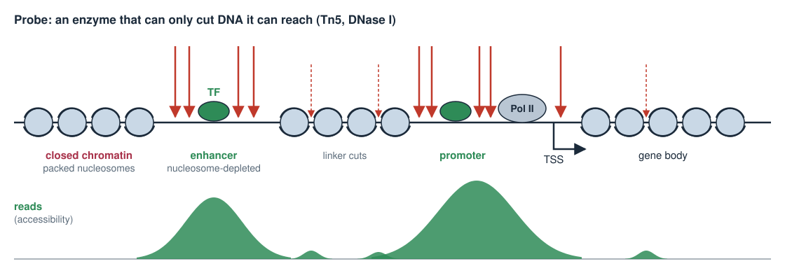
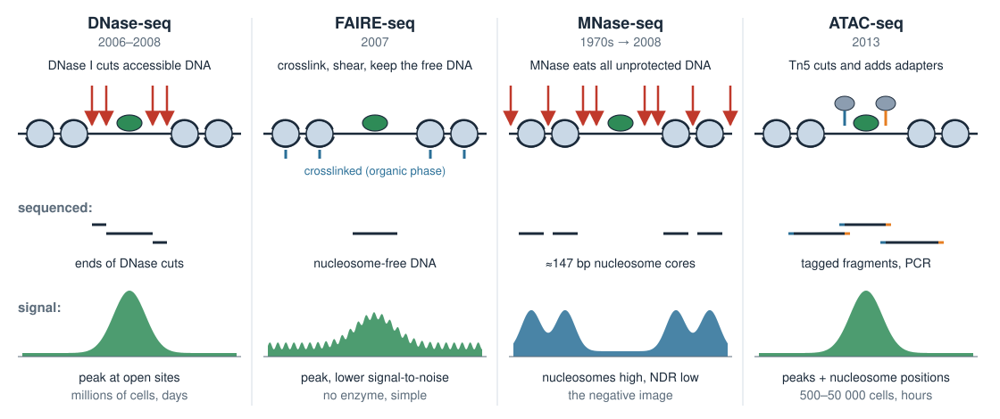
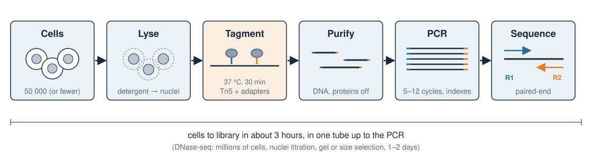
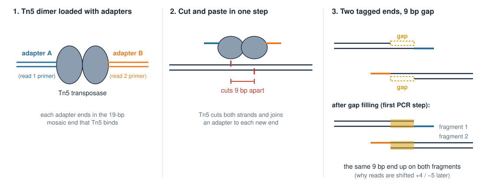
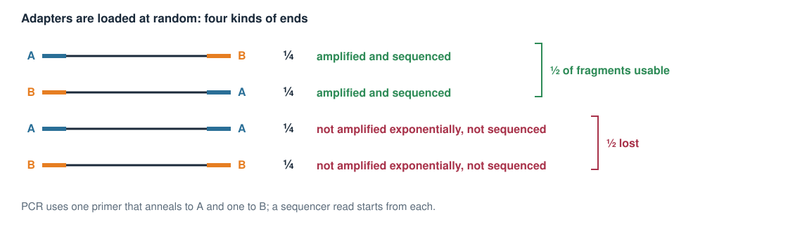
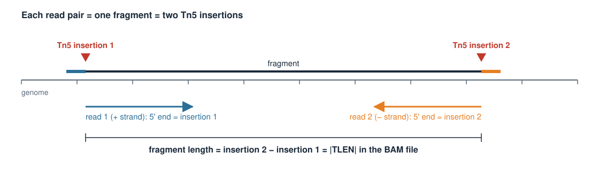
TLEN, column 9 of SAM): positive for the leftmost mate, negative for the other.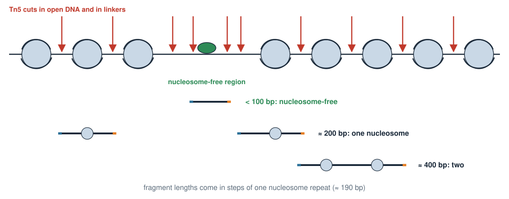
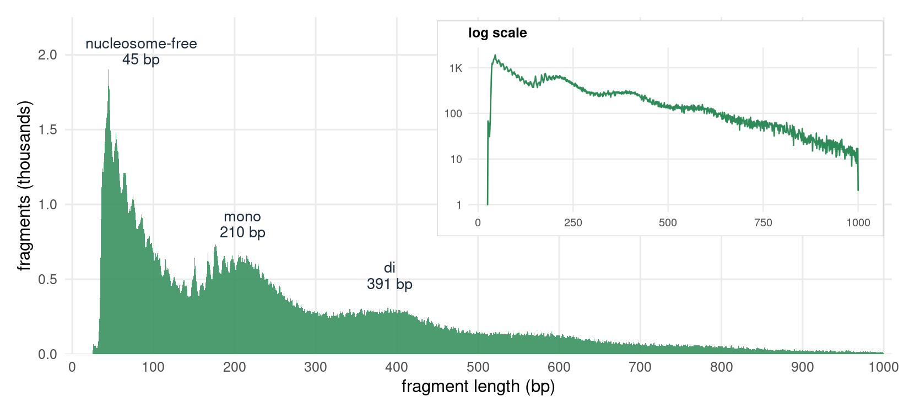
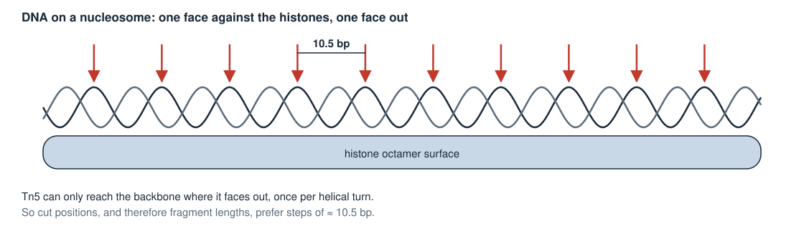
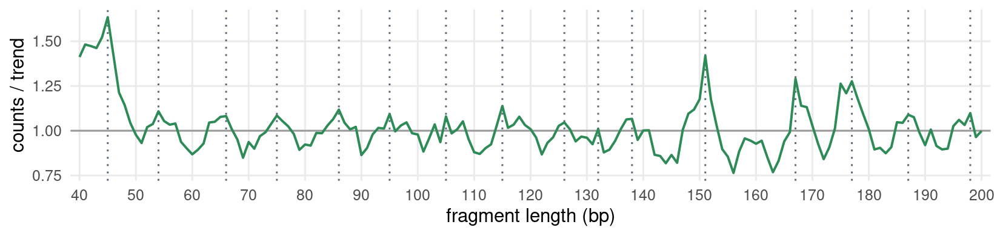
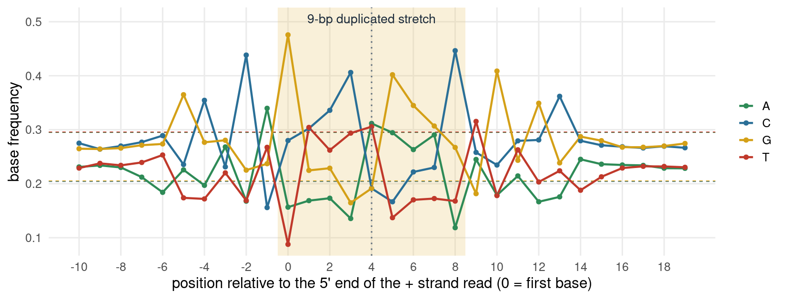
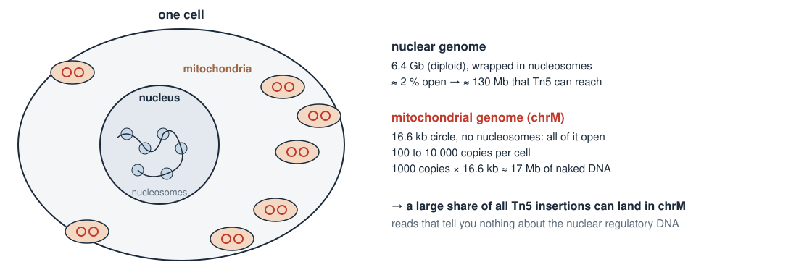
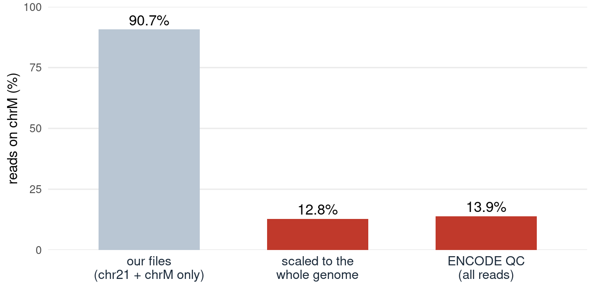
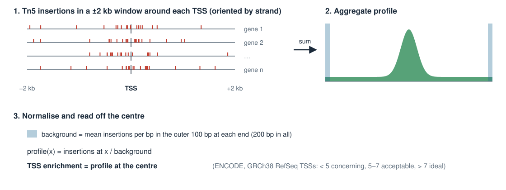
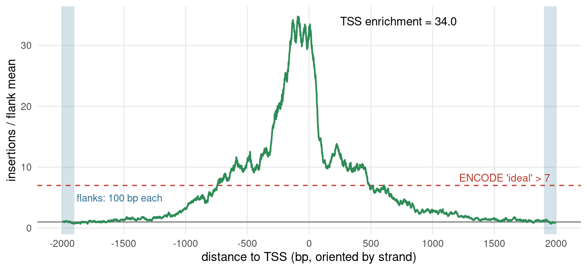
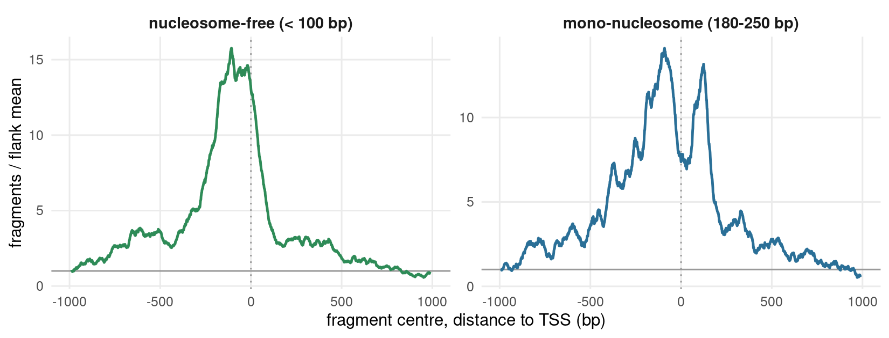
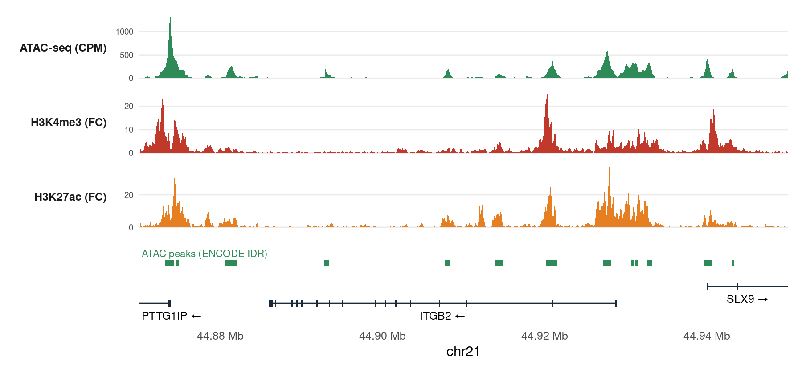
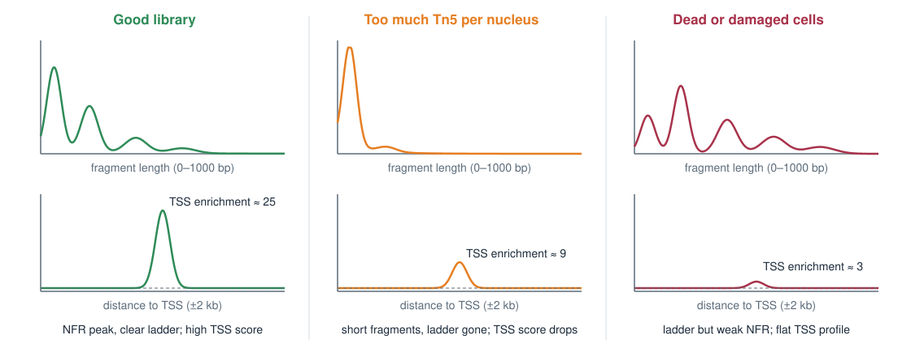
| metric | what it measures | ENCODE standard | GM12878 rep1 |
|---|---|---|---|
| fragment-length distribution | the reaction worked, nucleosomes present | NFR and mono-nucleosome peaks present | both present (ladder slide) |
| chrM fraction | wasted reads | (no threshold; Omni-ATAC: a few %) | 13.9% |
| TSS enrichment | signal-to-noise | > 7 ideal, 5–7 acceptable (GRCh38, RefSeq) | 29.6 |
| FRiP | signal-to-noise, needs peaks | > 0.3 (> 0.2 acceptable) | ATAC-seq processing and peak calling |
| non-duplicate, non-chrM fragments | depth | ≥ 25 M per replicate | 72 M non-chrM reads, 29% duplicates |
| NRF, PBC1, PBC2 | library complexity | > 0.9, > 0.9, > 3 | 0.80, 0.81, 5.2 |
| replicates | reproducibility | ≥ 2, IDR on peaks | 2 |
| protocol | change | why |
|---|---|---|
| standard (Buenrostro 2013) | NP-40 lysis, 50 000 cells | the original |
| Fast-ATAC (Corces 2016) | digitonin, lysis and tagmentation together | blood cells; fewer chrM reads |
| Omni-ATAC (Corces 2017) | NP-40 + Tween-20 + digitonin, wash, PBS in the reaction | less chrM, better signal-to-noise; works on frozen tissue |
| single-cell ATAC | tagment nuclei in bulk, then barcode each nucleus (droplets or combinatorial indexing) | cell types in a mixture; a later unit |
| multiome | scATAC + scRNA from the same nucleus | links accessibility to expression |
# 1. trim the Nextera adapter that reads run into when the fragment is short
fastp -i R1.fastq.gz -I R2.fastq.gz -o trim_R1.fastq.gz -O trim_R2.fastq.gz \
--adapter_sequence CTGTCTCTTATACACATCT --adapter_sequence_r2 CTGTCTCTTATACACATCT
# 2. align pairs; allow fragments up to 2 kb (default is 500)
bowtie2 --very-sensitive -X 2000 -x hg38_chr21_chrM -1 trim_R1.fastq.gz -2 trim_R2.fastq.gz \
| samtools fixmate -m - - | samtools sort -o all.bam
samtools markdup -r all.bam dedup.bam
# 3. QC on all reads, then keep good pairs off chrM
samtools idxstats all.bam # chrM fraction
samtools view -b -f 2 -F 1804 -q 30 dedup.bam chr21 > rep1.bam # proper pairs, MAPQ>=30-X 2000 so that nucleosomal fragments are not thrown out as discordant.| idea | key fact |
|---|---|
| accessibility | NDRs at active promoters, enhancers, insulators; ~1–3% of the genome |
| history | DNase hypersensitivity → DNase-seq; FAIRE; MNase-seq (nucleosomes) |
| Tn5 | cuts and adds adapters in one step (tagmentation); 9-bp duplication → +4 / −5 shift |
| two adapters | only A–B fragments are sequenced: 50% of fragments usable |
| fragment length | = distance between two insertions = TLEN; nucleosome ladder (< 100, ~200, ~400 bp) and 10.5-bp ripple |
| bias | weak, symmetric sequence preference; matters for footprinting |
| chrM | naked, many copies: often 10–50% of reads; Omni-ATAC reduces it |
| TSS enrichment | insertions at TSSs / mean of outer 100 bp at ±2 kb; > 7 ideal (ENCODE, GRCh38) |
| bad libraries | over-/under-tagmentation (fragment sizes), dead cells (flat TSS profile) |
Not required reading and not examined. For those who want the primary literature.